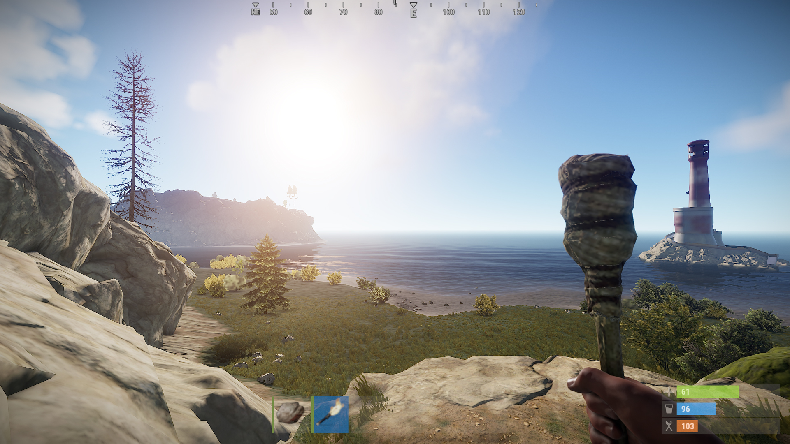

The game that I will be analyzing for this first play log will be Rust. Rust is a first person survival game developed by Facepunch studios. Rust was released back in December of 2013 and is slowly coming up on its 10 year anniversary. You can play this game on any platform but it is highly preferred to be played on PC. The objective of this game is to survive, similar to games such as Ark: Survival Evolved and DayZ, Rust aims to create a hostile and dangerous environment with wild bears, wolves, various NPCs and dungeon-like encounters. Since rust is a multiplayer game the main danger are other live players that pose a threat to your base and you. Once you spawn on an procedurally generated island you are presented with only a rock and a torch to light the way. As night comes quickly and you rush around mining trees and rocks to get a base down.
Once nights come darkness engulfs everything to the point where you can’t even see your hands so you're forced to stay in your 2x2 hut made of wood until morning. You venture around in the morning and find various areas of interest including a camp of Bandit NPCs that sell various items to help you in the wipe. There is not a main step by step story mode in the game. Likewise minecraft when you defeat the enderdragon they roll the credits and you presume the game to end but you just respawn in your bed and can do whatever the heart desires. In Rust there are no roll credits and with the inclusion of other players that you can encounter the idea can become way more broad with what you can do. People have made movies of Rust gameplay featuring all sorts of storylines created by themselves. Aesthetically the game is more realistic looking and how the game acts with fall damage, temperature, and radiation.
The game flows completely free, different from games such as minecraft where you have a sort of safety in the day but hostile animals and NPCs spawn no matter what or where. The traditional use of “WASD” are used as the traditional movement keys with keys to craft basic things such as small chests A “Tool Cupboard” which is used to lock down a certain area where it is placed so no else that isn't registered with that “TC” may build anything, with the exception of ladders which are used for raids. There are many coined terms that are used in Rust that are unique to the game such as Naked: Someone without clothing or with very little, either a new spawn or grub. Bow Kid: Someone with a bow, usually a primitive kit. Hazzy: Hazmat Suit which can be obtained at various players across the map,
But more often referred to someone wearing a hazmat suit. Boom: explosives of any kind, be that explo ammo, rockets, satchels, grenades or c4. Door Camp or Roof Camp: refers to an enemy or yourself that camps at either a roof or ground entrance to a base and waits until the other leaves the house and kills them. Headshot Hit: refers to when someone shoots a person in the head then in the body once meaning they are low HP.
Here is an example of a procedurally generated map on a server. You can also see of there are named areas of interest such as Outpost or Bandit Camp which are safe zones where you can meet others safely and trade with NPCs.

Pictured is an example of where you can randomly spawn on the island with only A rock and Torch.
Log 2
The game that I analyzed this week is Lego Star Wars Skywalker Saga which was released on October 20, 2020. The game is developed by TT Games and is available on various platforms. The game is a retelling of all nine Skywalker Saga movies through the lens of Lego Star Wars. The rules are simple and easy to understand. The player controls a variety of characters and navigates through various levels. The game's main objective is to collect Lego studs, unlock new characters, complete levels, and progress through the 9 Star Wars movies.
The mechanics of Lego Star Wars are similar to other Lego video games. The player can jump, shoot, and use Force to defeat enemies and solve puzzles. The game also features a co-op mode where two players can play together. Players can switch between characters and use abilities to progress through levels. The player moves by traveling from point A to point B, overcoming obstacles, solving puzzles, and battling enemies along the way.
The art of The Skywalker Saga is visually stunning. With a fresh new look from the older games that were released throughout the last two decades. The game's environments and characters are designed to look like Lego toys, providing a unique and appealing visual style. The game's cutscenes are also well-animated and provide a humorous take on the Star Wars movies. The game's aesthetics are unique and appealing, providing a fun and entertaining experience for players.
The interface is clean and easy to navigate, with the menu system straightforward and the in-game HUD providing all necessary information. Navigation through the game is straightforward, with the player moving through levels, solving puzzles, and defeating enemies to reach the end of each level, aided by a map system that displays the different levels and objectives. The player interacts with the system through a combination of buttons, sticks, and touch inputs, depending on the platform being used. The game also features a map that displays the different levels and objectives, making it easy for players to keep track of their progress.
Lego Star Wars: The Skywalker Saga is a well-designed game that appeals to both Star Wars fans and Lego fans while providing simple rules, mechanics, interface, and navigation that make it easy for players to play the game.